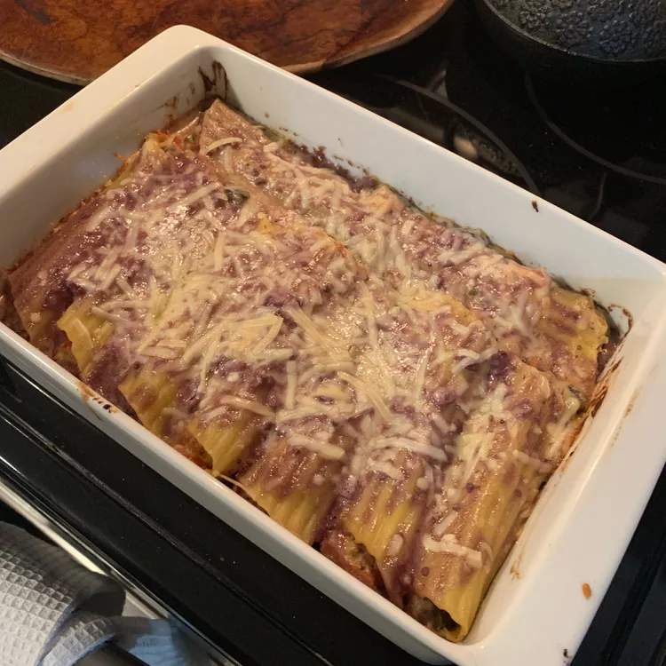

Cannelloni
Home
Lasagna
Pizza
Cannelloni
Vegetable Stuffed Cannelloni

Delicious cannelloni stuffed with an array of vegetables, Parmesan, and ricotta cheese. Serve with a big green salad.
Ingredients
- 8 cannelloni noodles
- 2 tablespoons olive oil, divided
- 5 shallots, chopped
- 5 cloves garlic, minced
- 1 cup dry sherry
- 2 cups heavy whipping cream
- salt and pepper to taste
- 1 onion, chopped
- 1 small eggplant, diced
- 1 zucchini, chopped
- 1 cup fresh sliced mushrooms
- 2 roasted red bell peppers, diced
- 1 cup grated Parmesan cheese
- ¾ cup ricotta cheese
- 1 teaspoon dried oregano
- 1 teaspoon dried basil
Steps
- Preheat the oven to 350 degrees F (175 degrees C). Lightly grease a 9x13-inch baking dish.
- Bring a large pot of salted water to a boil. Cook cannelloni in boiling water until partially cooked, 5 to 7 minutes. (They will finish cooking when baked.) Drain and set aside.
- Heat 1 tablespoon olive oil in a medium saucepan over medium heat. Cook and stir 1/3 of the shallots and 1/2 of the garlic in hot oil for 30 seconds. Pour in sherry, increase heat to high, and reduce liquid by half. Stir in cream and reduce until about 1 1/2 cups liquid remains. Remove from heat and season with salt and pepper. Set cream sauce aside.
- Heat remaining 1 tablespoon olive oil in a large skillet over medium heat. Cook and stir onion, eggplant, zucchini, mushrooms, remaining shallots, and remaining garlic in hot oil until vegetables are tender. Transfer to a large bowl. Add roasted red peppers, Parmesan, ricotta, oregano, and basil; mix well. Season with salt and pepper. Set filling aside.
- Stuff vegetable-cheese filling into cannelloni and place in the prepared baking dish. Cover with cream sauce.
- Bake in the preheated oven until bubbly and heated through, about 25 minutes.